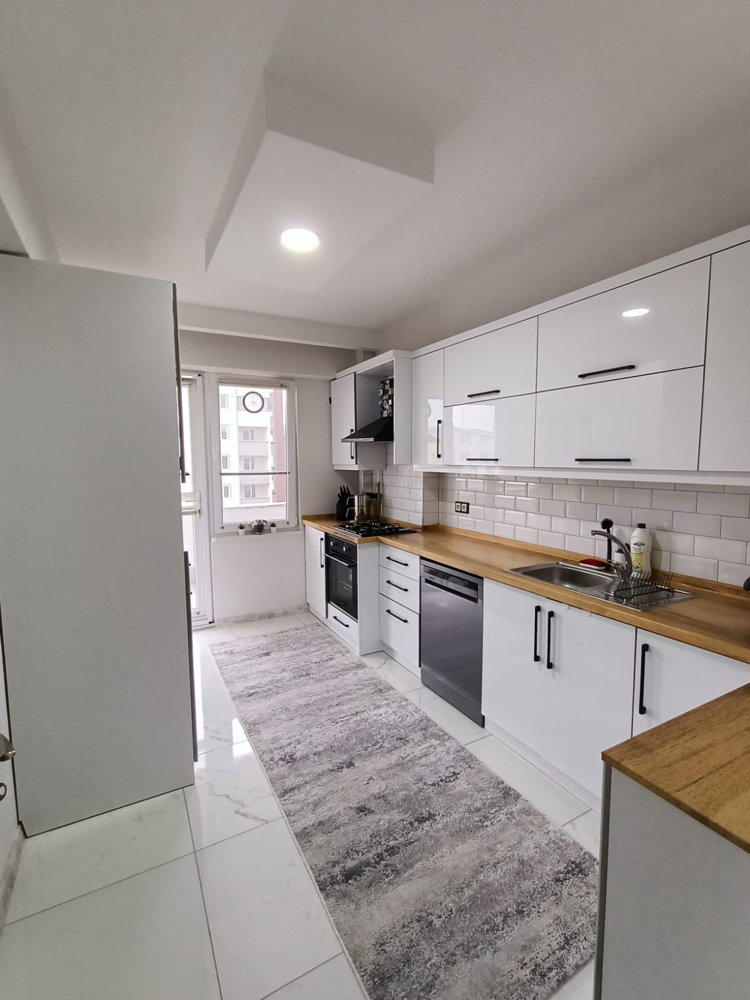

Mutfak dolabı
Ölçüye özel MDF mutfak dolapları. Ahşap görünümlü ve düz renkli tasarımlar; akrilik ve lake boyalı yüzey seçenekleri.
BURSA VE ÇEVRE İLLER · ÖZEL ÜRETİM
Bursa ve çevre illerde eviniz ve iş yeriniz için ölçüye özel tasarım, üretim ve montaj. Alanınıza ve ihtiyaçlarınıza göre şekillenen mobilyalar.

ÖLÇÜYE ÖZEL TASARIM & ÜRETİM
Önce alanınızı ve ihtiyacınızı dinliyoruz. Ölçü, yerleşim, malzeme ve tasarım detaylarını birlikte belirleyerek mobilyanızı size özel üretiyoruz.
Bursa ve çevre illere hizmet veriyoruz. İstanbul ve Balıkesir’deki projeleriniz için de bizimle iletişime geçebilirsiniz.
Ölçüye özel MDF mutfak dolapları. Ahşap görünümlü ve düz renkli tasarımlar; akrilik ve lake boyalı yüzey seçenekleri.
Depolama ihtiyacınıza göre düzenlenen gardırop, yatak odası dolapları ve makyaj alanları.
Salonun ölçülerine ve istediğiniz görünüme uygun TV ünitesi, panel ve duvar uygulamaları.
Giriş alanını değerlendiren, kıyafet ve ayakkabılar için ölçüye özel depolama çözümleri.
Odanın kullanımına göre planlanan çalışma masası, raf ve dolap tasarımları.
Merdiven kaplaması, kapı, baza ve eczane veya kuyumcu gibi iş yerleri için özel mobilya uygulamaları.
SEÇİLİ İŞLERİMİZ
Ölçüsünden yerleşimine, renginden detaylarına.
İhtiyacınıza göre şekillenen mobilyalar.
MALZEME & YÜZEY SEÇENEKLERİ
MDF ile mutfak üretimi.
Akrilik ve lake boyalı çalışma seçenekleri.
Mutfak dolabı üretimimizde MDF kullanıyoruz. Ölçüleri ve kullanım düzenini mekânınıza göre planlıyoruz.
Akrilik yüzeyli çalışmalarımız da bulunuyor. Uygulama ve renk tercihlerini projeniz için birlikte değerlendirebiliriz.
Lake boyalı çalışmalar yapıyoruz. Kapak tasarımı ve boya tercihlerini istediğiniz görünüme göre konuşabiliriz.
NASIL ÇALIŞIYORUZ?
Hangi alan için ne istediğinizi, kullanım alışkanlıklarınızı ve aklınızdaki fikirleri konuşuyoruz.
Ölçüleri alıyor, yerleşim, malzeme ve detayları birlikte netleştirerek teklif hazırlıyoruz.
Onaylanan ölçülere ve kararlaştırılan detaylara göre mobilyalarınızı üretiyoruz.
Üretilen mobilyaları mekânınıza monte ederek kullanıma hazır hâle getiriyoruz.
ORHAN MOBİLYA
Bursa, İstanbul, Balıkesir ve çevre illerdeki projeleriniz için bizimle iletişime geçin. Ölçüye özel mobilya ihtiyacınızı birlikte değerlendirelim.